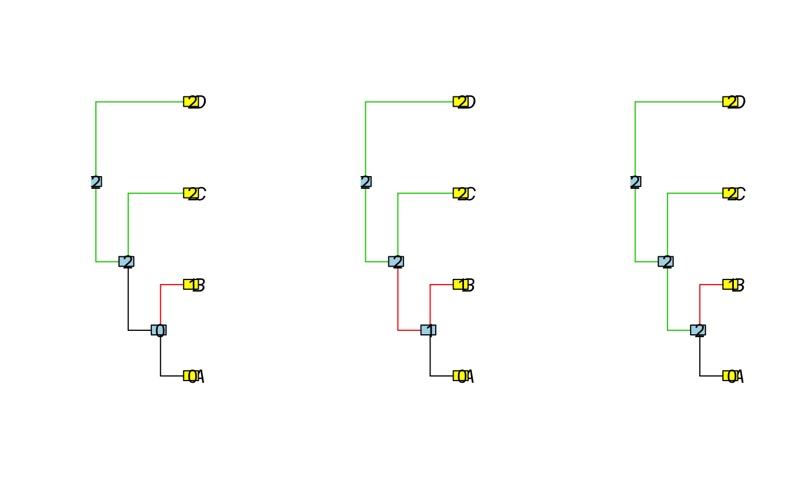

R/parsimonyNumber.R
enumerate_parsimony.Rdenumerate_parsimony enumerate all the equivalent allocation of the
regimes in the tree, a clustering of the tips being given. The number of such
equivalent regimes is given by parsimonyNumber (which is faster).
enumerate_parsimony(phylo, clusters = rep(1, length(phylo$tip.label)))
| phylo | a phylogenetic tree, class |
|---|---|
| clusters | a vector representing the group of each tip. (Default to only one group with all the tips.) |
an S3 object of class "enumerate_parsimony", with:
an object of class "parsimonyCost", result
of function parsimonyCost.
a list of size Nnode + ntaxa. Each entry i of the list represents the solutions for the subtree starting at node i. It is a list with nclus entries, each entry being a matrix. A line of the kth matrix for the ith node is one possible allocation of the shifts, starting with regime k for node i.
the entry phylogenetic tree
Function extract.enumerate_parsimony furnishes the result in a
human readable form (for any subtree).
Function plot.enumerate_parsimony plots all the solutions found on
the tree.
extract.enumerate_parsimony,
plot.enumerate_parsimony, parsimonyCost,
parsimonyNumber, partitionsNumber,
equivalent_shifts
## Extract the parsimonious solutions from the root extract(sols) # each line is a solution, with states of each node#> [,1] [,2] [,3] [,4] [,5] [,6] [,7] #> [1,] 0 1 2 2 2 2 0 #> [2,] 0 1 2 2 2 2 1 #> [3,] 0 1 2 2 2 2 2#> [1] 3#> [1] 3#> [1] 2#> [1] 2#> [,1] [,2] [,3] [,4] [,5] [,6] [,7] #> [1,] 0 1 NA NA NA NA 0 #> [2,] 0 1 NA NA NA NA 1